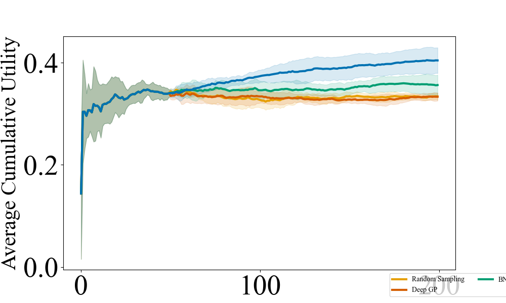
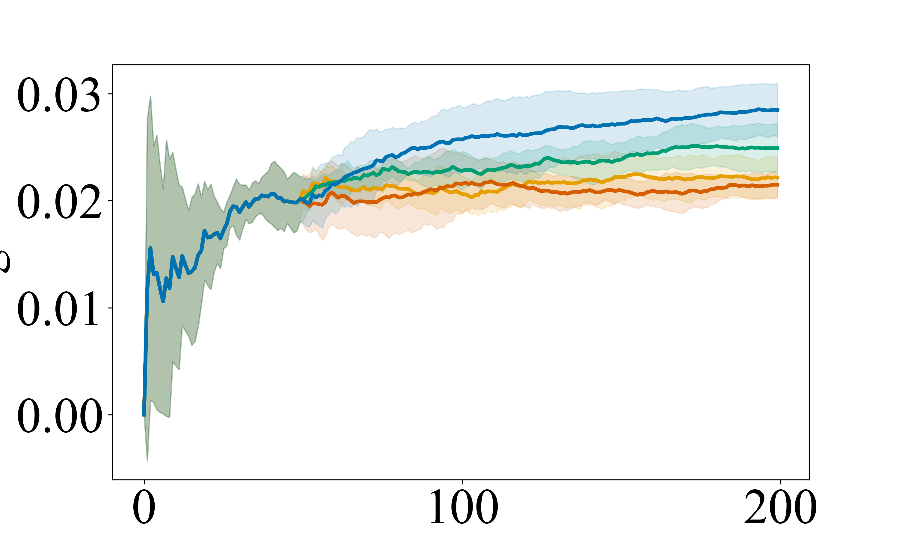
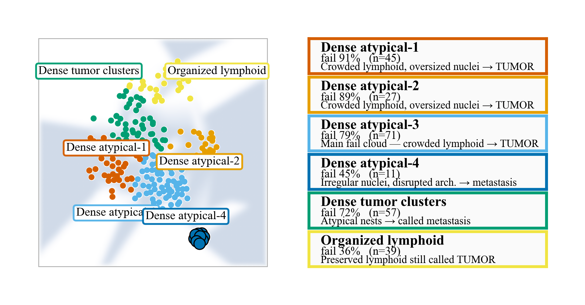
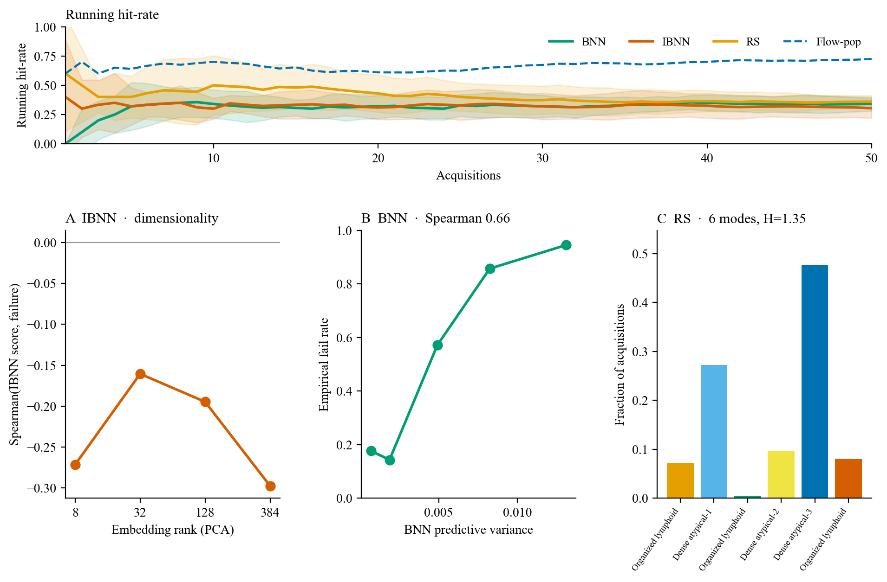

NeurIPS 2026 · Project page
Adaptive Test Case Discovery for LLM-Assisted Decision Making in High-Stakes Domains
A sample-efficient scenario design strategy that uses a flow-based surrogate to acquire diverse, high-utility test cases for LLM decision pipelines.
Abstract
Large language models are increasingly used for assistive decision-making in high-stakes domains, yet their outputs can be unreliable and difficult to audit. We formulate pre-deployment testing as adaptive experimental design, using a flow-matching surrogate to sequentially acquire scenarios that balance optimization toward challenging cases with diverse exploration via mutual information. Across bank loan approval, stock prediction from news, disaster resource allocation, and Camelyon17 pathology, the method discovers challenging scenarios with high coverage of scenario space.
Selected results
Ablation overview (mean ± std over seeds). Template excerpt from Table 1 of the paper — full baselines and appendices in the PDF.
| Setting | Method | Avg. cum. utility | Coverage | Vendi |
|---|---|---|---|---|
| Bank Loan (h₁) | ||||
| Flow (ours) | 0.829 ± 0.023 | 1.141 ± 0.032 | 2.80 ± 0.17 | |
| No-MI | 0.899 ± 0.026 | 0.914 ± 0.144 | 2.07 ± 0.34 | |
| Only-MI | 0.362 ± 0.019 | 0.883 ± 0.043 | 3.45 ± 0.14 | |
| News (h₃) | ||||
| Flow (ours) | 0.987 ± 0.138 | 0.902 ± 0.121 | 1.87 ± 0.24 | |
| No-MI | 1.151 ± 0.050 | 0.733 ± 0.094 | 1.23 ± 0.22 | |
| Only-MI | 0.791 ± 0.020 | 0.821 ± 0.041 | 2.46 ± 0.10 | |
| Disaster Image (h₃) | ||||
| Flow (ours) | 0.426 ± 0.029 | 0.996 ± 0.077 | 1.15 ± 0.02 | |
| No-MI | 0.480 ± 0.014 | 1.097 ± 0.008 | 1.10 ± 0.02 | |
| Only-MI | 0.311 ± 0.017 | 0.704 ± 0.061 | 1.18 ± 0.01 | |
| Camelyon17 (h₁) | ||||
| Flow (ours) | 0.650 ± 0.080 | 3.40 ± 0.15 | 2.40 ± 0.35 | |
| No-MI | 0.690 ± 0.093 | 3.25 ± 0.10 | 2.14 ± 0.26 | |
| Only-MI | 0.220 ± 0.064 | 1.91 ± 0.50 | 4.18 ± 1.20 | |
Figures
Representative plots from the current analysis pipeline. More will be added as the camera-ready is finalized.




Code & citation
Official implementation will live under the MIT-REALM GitHub organization. Development mirror: anjaliParashar/bayes_llm.
@inproceedings{parashar2026adaptive,
title={Adaptive Test Case Discovery for LLM-Assisted Decision Making in High-Stakes Domains},
author={Parashar, Anjali and Sobolewski, Carson and Li, Yingke and Chen, Fei and Fan, Chuchu},
booktitle={Advances in Neural Information Processing Systems (NeurIPS)},
year={2026}
}